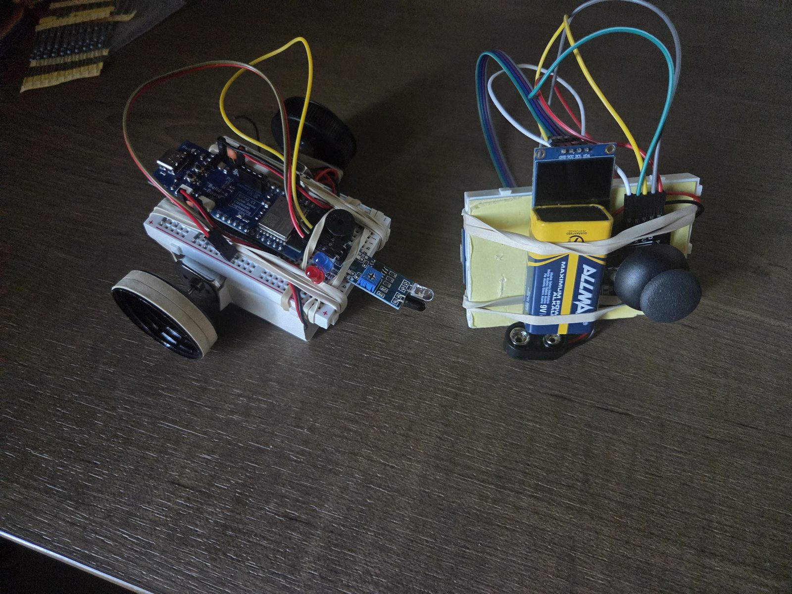
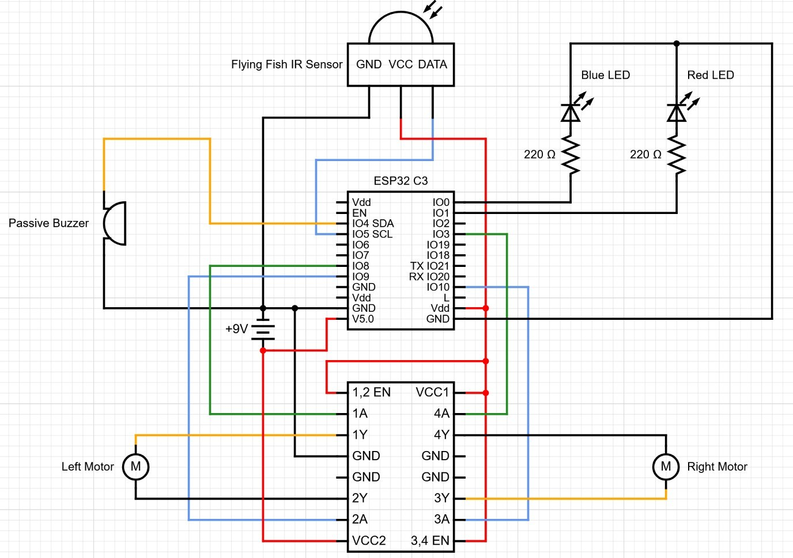
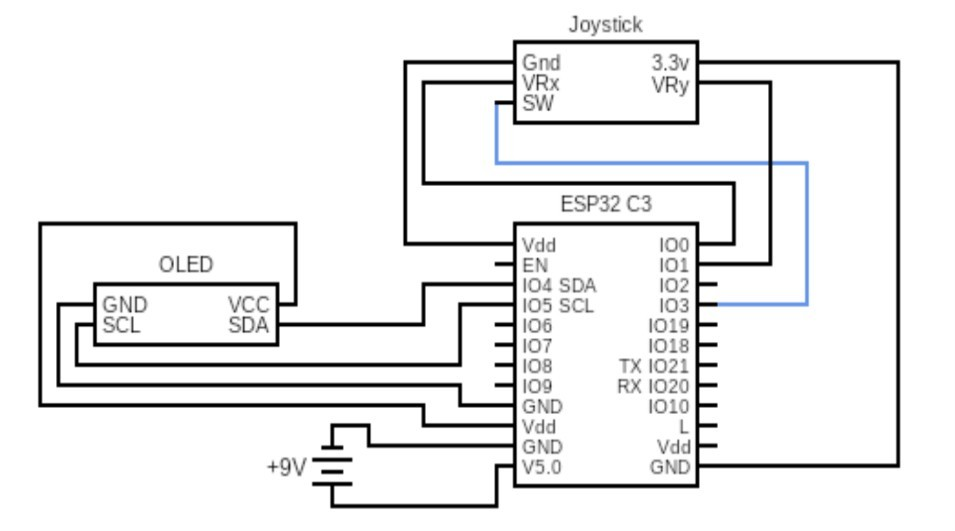

What it does
The controller sends drive, light and siren commands. The car streams back signal strength (RSSI), obstacle alerts from an IR sensor, and light/siren status, all shown on an OLED screen on the controller.

Hardware


All circuitry was breadboarded into a battery-powered prototype: an H-bridge motor driver, LED lighting, a siren, and an IR obstacle sensor.
Firmware
Both devices run asynchronous, non-blocking C/C++ firmware. Wireless reception, motor control and light/siren switching all run without stalling the main loop, so the car keeps responding while telemetry is flowing.
In action
A driving test on the floor: the car responds to the controller in real time as it drives forward, turns and changes direction.
What's next
- Custom PCB: move the circuitry off the breadboard onto a designed board for the car and the controller.
- Range testing: measure how RSSI and packet loss on the ESP-NOW link change with distance and obstacles.